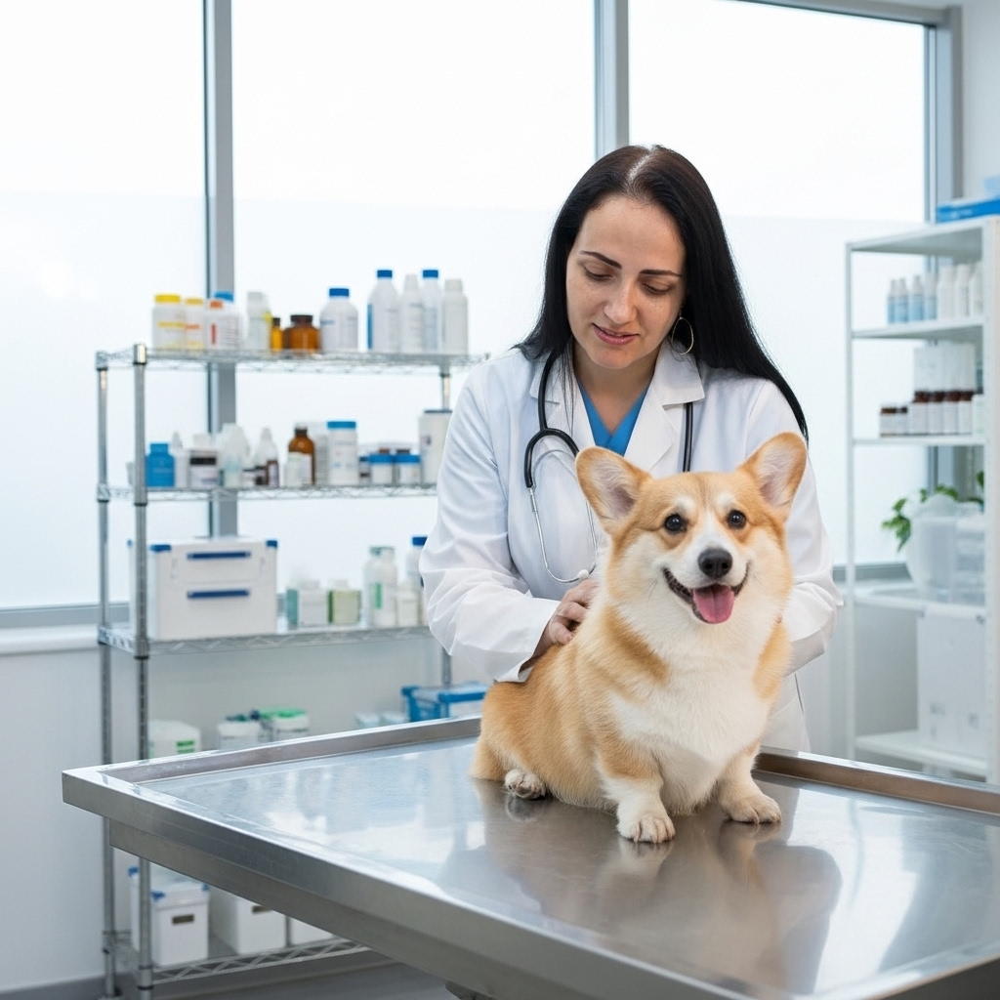
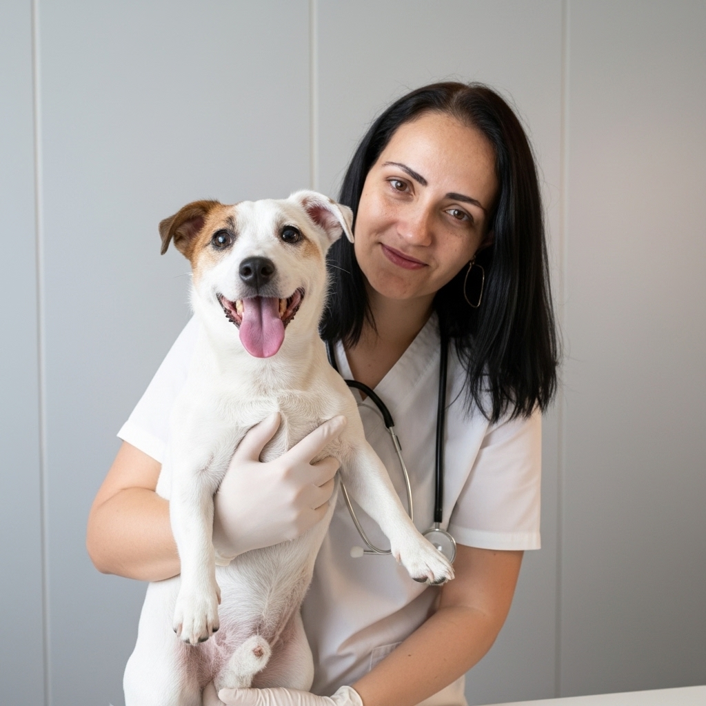

Consultas
Avaliação clínica completa para prevenir problemas e manter seu pet saudável em todas as fases da vida.
Guarapiranga · São Paulo · +20 anos de cuidado
Clínica veterinária 100% dedicada à saúde do seu pet — sem banho e tosa, só cuidado clínico de verdade. Mais de 20 anos de experiência cuidando de cães e gatos em Guarapiranga.
Confiança desde o primeiro atendimento
A Bichos do Guará nasceu do amor pelos animais e cresceu com a confiança das famílias de Guarapiranga. Aqui, cada pet é recebido pelo nome — e tratado como membro da família.
À frente do atendimento clínico está a Dra. Luciana Gouveia, responsável técnica, que reúne mais de 20 anos de experiência em medicina veterinária e um cuidado que vai além do consultório.
Marcar uma visitaSem pressa, com escuta de verdade.
Dra. Luciana Gouveia, responsável técnica.
Décadas cuidando de cães e gatos.
Consultas, exames e cirurgias no mesmo lugar.
O que oferecemos
Estrutura completa e uma equipe que ama animais. Escolha o cuidado ideal para o seu companheiro.

Avaliação clínica completa para prevenir problemas e manter seu pet saudável em todas as fases da vida.

Calendário de vacinas em dia, com carteirinha e lembretes das próximas doses.
Centro cirúrgico equipado, do procedimento de rotina à castração, com segurança e monitoramento.

Identificação segura e definitiva do seu pet, com registro rápido e sem dor.
Sangue, imagem e diagnóstico rápido para respostas precisas e o tratamento certo.
Diferenciais
Sem pressa, com escuta de verdade — cada tutor e cada pet recebidos pelo nome.
Consultas, exames e cirurgias sob o mesmo teto, sem precisar correr atrás de outro lugar.
Mais de 20 anos de prática clínica cuidando de cães e gatos em Guarapiranga.
Resultados rápidos, sem precisar sair da clínica para diagnosticar o seu pet.
Depoimentos
"Levo minha gata há anos. A Dra. Luciana é atenciosa e explica tudo com calma. Confio de olhos fechados."
"Meu cachorro precisou de cirurgia e fui muito bem acolhido. Equipe carinhosa e clínica super organizada."
"Melhor veterinária de Guarapiranga. Preço justo e atendimento de verdade. Recomendo para todo mundo."
"Profissionais que amam o que fazem. Minha gata odiava veterinário e aqui ela fica tranquila."
"Sempre explicam cada exame e nunca empurram procedimento desnecessário. Confiança total."
"Vacinação em dia com lembrete no WhatsApp. Praticidade que faz diferença na correria do dia a dia."
Onde estamos
Bem no coração de Guarapiranga, pertinho de você e do seu pet.